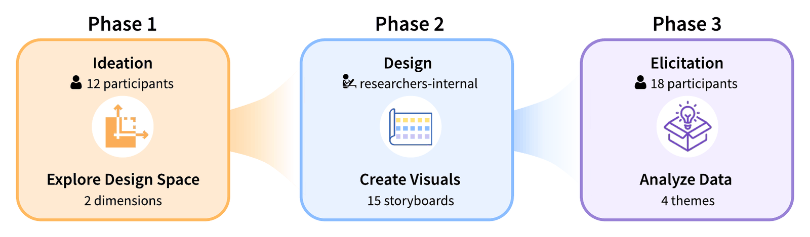

When AI Enters Social Life: Futuring Human–AI Social Assemblages
AI is moving from helping us with tasks to helping us with each other: drafting our messages, suggesting whom to meet, and nudging how we keep in touch. What happens to people, and to the relationships between them, when social AI becomes part of how we connect?

Methods

-
Phase 1: Ideation
Co-design interviews with design tasks on participants' experiences, motivations, and barriers in forming social connections online, and on how AI might support them. Grounded further with literature from communication theory, sociology, and social psychology.
N = 12 online graduate students - A two-dimensional design space A five-stage cycle of forming social interaction (data collection, profiling, social formation, social maintenance, reflection) crossed with three levels of AI social capability (human augmentation, social replica, omniscient social beings).
-
Phase 2: Design
Each of the 15 stage × capability combinations became a text narrative and then a visual storyboard. The storyboards were deliberately open to interpretation and sometimes provocative, and were refined through think-aloud pilot sessions.
15 storyboards · 5 pilot rounds -
Phase 3: Elicitation
Semi-structured, think-aloud interviews of 60–120 minutes in which participants reacted to the storyboards and imagined living with these systems.
N = 18, including 6 returning from Phase 1 -
Analysis
Thematic analysis of the transcripts, with every session coded independently by two researchers and themes refined in regular team discussions.
≈ 28 hours of recorded sessions
Key Findings
Participants saw real benefits in social AI, but also four tensions in how it could reshape them and the people around them.
Short-term ease, long-term erosion
AI that filters incoming signals and polishes outgoing ones makes socializing easier, but erodes authenticity and can deepen the isolation it claims to solve.
AI as a social third party
AI becomes a new, non-judgmental advisor, while people drawn into AI-mediated interactions without knowing it face privacy and consent harms.
Blurred agency and identity
Joint human–AI efficacy brings convenience but puts social skills at risk, and a co-constructed identity can drift toward homogenization or replacement.
Quantified sociality
Data-driven social insight cuts both ways, offering self-knowledge alongside anxiety, and sycophantic AI left participants doubting it could truly support them.
Contributions
- Showed how designs that prioritize short-term convenience in social AI can carry long-term personal and interpersonal costs.
- Extended who counts as affected to non-primary users: people pulled into AI-mediated interactions they never chose.
- Proposed a shift from user-centered toward relational and provocative design, such as purposeful friction in place of sycophantic validation, and designing for relationships rather than isolated individuals.
- Received a Best Paper Honorable Mention at CHI 2026.
Follow-up Work
- An online study on Prolific comparing social AI design paradigms and how they shape users' interpersonal dynamics, responsibility attribution, and trust, using mixed methods.
- An investigation of the relational risks people report from using social AI, drawn from online communities.
Related
Cite
Lingqing Wang, Yingting Gao, Chidimma Lois Anyi, and Ashok K. Goel. 2026. Futuring Social Assemblages: How Enmeshing AIs into Social Life Challenges the Individual and the Interpersonal. In Proceedings of the 2026 CHI Conference on Human Factors in Computing Systems (CHI '26), April 13–17, 2026, Barcelona, Spain. ACM, New York, NY, USA, 21 pages. https://doi.org/10.1145/3772318.3790279